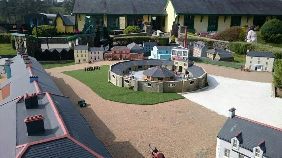
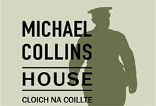
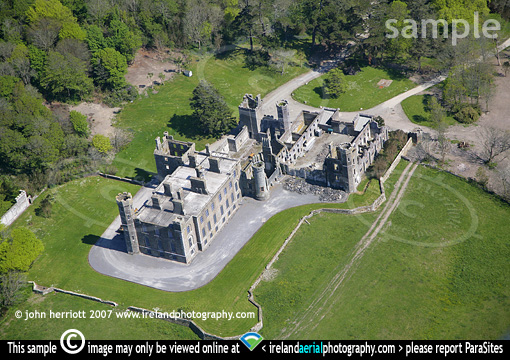
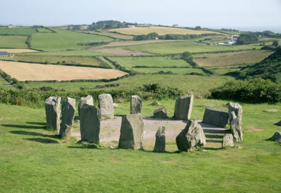

|  |  |
| West Cork Model Railway Village Address: Inchydoney Road, Youghals, Clonakilty, Co. Cork. (023) 883 3224 | Michael Collins Centre Address: Castleview, Clonakilty, Co. Cork. (023) 884 6107 |
|  |  |
| Clonakilty,Castlefreke Address:Rosscarbery | Templebryan Stone Circle Address: Shannonvale House, Shannonvale, Clonakilty, Co. Cork. |